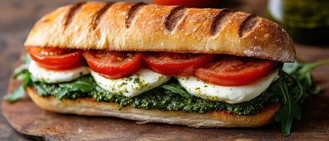

Caprese Sandwich
Ingredients
2 slices of sourdough or ciabatta bread
Fresh mozzarella slices
Tomato slices
Fresh basil leaves
Olive oil
Balsamic glaze (optional)
Salt & pepper
Instructions
- Toast the bread lightly.
- Layer tomato, mozzarella, and basil on one slice.
- Drizzle with olive oil and balsamic glaze, sprinkle salt and pepper.
- Top with the second slice of bread.
- Grill or press lightly for a warm sandwich (optional).